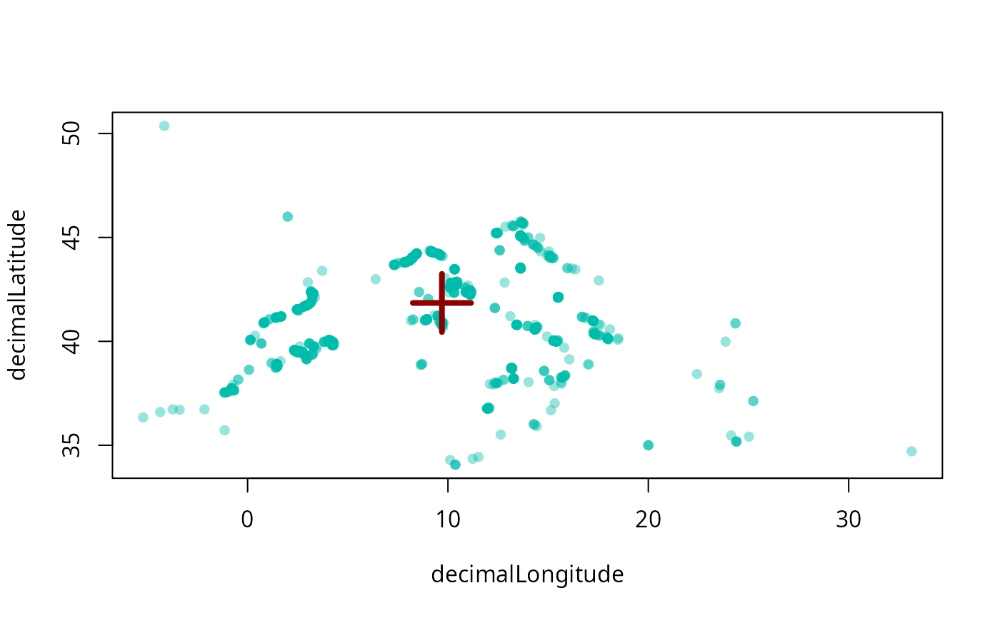

Calculate centroid of a point cloud
Usage
centroid(x, ...)
# S4 method for class 'matrix'
centroid(
x,
long = NULL,
lat = NULL,
duplicates = FALSE,
plot = FALSE,
plot.args = NULL
)
# S4 method for class 'data.frame'
centroid(
x,
tax = NULL,
long = "long",
lat = "lat",
duplicates = FALSE,
plot = FALSE,
plot.args = NULL
)Arguments
- x
Eiher a 2-column numeric matrix with two columns: longitudes and latitudes, or a
data.framewith these columns.- ...
Additional arguments passed to class-specific methods.
- long
character, column name of the longitudes.- lat
character, column name of the latitudes.- duplicates
logical, should identical coordinates be included in the calculation (default isFALSE).- plot
Logical, should the result be plotted? Will plot over active plot (as in
add=TRUE), if here is any.- plot.args
List arguments passed to the plotting function:
points.- tax
character, used only in thedata.framemethod. Column name of groups (e.g. taxa) that allows the iteration of the method for multiple groups.
Examples
# Records
data(pinna)
nobilis <- pinna[pinna$species=="Pinna nobilis", ]
plot(nobilis[c("decimalLongitude", "decimalLatitude")], pch=16, col="#00BBAA66")
# Number of unique coordinate pairs
cent <- centroid(nobilis, long="decimalLongitude", lat="decimalLatitude")
points(cent[1], cent[2], col="darkred", pch=3, lwd=4, cex=4)
